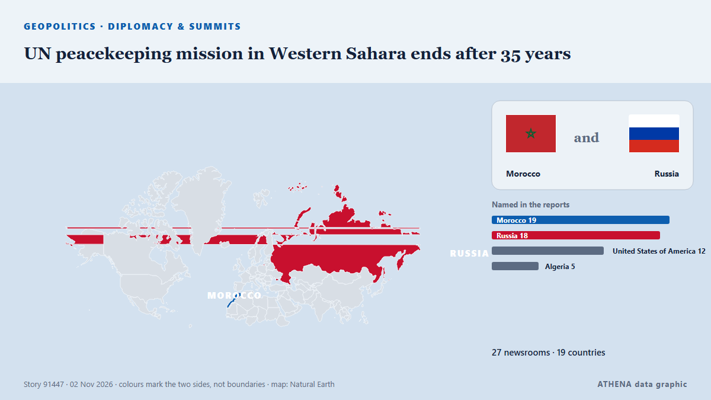

UN peacekeeping mission in Western Sahara ends after 35 years

Morocco, which claims the Western Sahara as its own, welcomed the decision, while its opponents in the Algeria-backed Polisario Front expressed concern. from Free Malaysia Today
Reported independently by 27 outlets in 19 countries since 1 Nov, first by UN News; coverage is at its peak. ATHENA rates the risk low (1.4/10), driven mainly by the severity of the harm described and its geographic and sector reach. Confidence is 90% (high), with 27 independent outlets corroborating it and an average source reliability of 77%. Newsrooms by country: Morocco (4), United States (3), Qatar (3). Coverage: 1 Nov to 2 Nov, 33 hours.
Why it matters: Security and diplomatic developments can shift alliances, trade and markets well beyond the countries directly involved.
What changed: 24 new reports from 20 newsrooms in the 24 hours to 2 Nov.
First reported as: UN begins liquidation of MINURSO after Security Council fails to renew mandate
At a glance
Selected, scored and written by ATHENA's published methodology. No editor intervenes in individual events. How this is produced ›
| 01 Nov 12:00 UTC | 2 |
|---|---|
| 01 Nov 14:00 UTC | 1 |
| 01 Nov 16:00 UTC | 2 |
| 01 Nov 18:00 UTC | 1 |
| 01 Nov 20:00 UTC | 4 |
| 01 Nov 22:00 UTC | 3 |
| 02 Nov 00:00 UTC | 1 |
| 02 Nov 02:00 UTC | 3 |
| 02 Nov 04:00 UTC | 3 |
| 02 Nov 06:00 UTC | 2 |
| 02 Nov 08:00 UTC | 1 |
| 02 Nov 10:00 UTC | 3 |
| 02 Nov 12:00 UTC | 1 |
| 02 Nov 14:00 UTC | 2 |
| 02 Nov 16:00 UTC | 2 |
| 02 Nov 18:00 UTC | 0 |
| 02 Nov 20:00 UTC | 2 |
| 01 Nov 13:08 UTC | 4.3 |
|---|---|
| 01 Nov 15:26 UTC | 3.0 |
| 01 Nov 16:48 UTC | 4.8 |
| 01 Nov 18:33 UTC | 5.8 |
| 01 Nov 21:15 UTC | 4.8 |
| 01 Nov 23:50 UTC | 6.2 |
| 02 Nov 00:00 UTC | 5.6 |
| 02 Nov 01:31 UTC | 4.5 |
| 02 Nov 17:24 UTC | 1.3 |
| 02 Nov 20:43 UTC | 1.4 |
Why these numbers
Importance
Risk
Confidence
The reporting — who reported it, and when
headline as published · opens the original- UN News · United StatesWestern Sahara: UN ‘stands ready’ to keep supporting peace efforts as MINURSO mission ends
- Hespress English · MoroccoUN begins liquidation of MINURSO after Security Council fails to renew mandate
- Al Jazeera English · QatarWhy is Morocco celebrating the defeat of a UN resolution on Western Sahara?
- Anadolu Agency (English) · TurkeyUN chief warns of escalation in Western Sahara after peacekeeping mandate ends
- TRT World · TurkeyUN raises alarm over violence in Western Sahara after peacekeeping mandate expires
- The New Arab · INTUN announces liquidation of MINURSO Western Sahara mission
- ABC News (International) · United StatesUN’s peacekeeping mission in Western Sahara ends after 35 years following US-Russia standoff
- The Straits Times · SingaporeUN peacekeeping mission in Western Sahara ends after 35 years, UN chief says
- France 24 English · FranceUN’s peacekeeping mission in disputed Western Sahara ends after 35 years
- Arab News · Saudi ArabiaUN’s peacekeeping mission in Western Sahara ends after 35 years following US-Russia standoff
- Hespress English · Morocco“Morocco is not waiting”: Experts say UN deadlock marks shift in Sahara policy
- Al Jazeera English · QatarUN warns of security risks in Western Sahara as peacekeeping mission ends
- Free Malaysia Today · MalaysiaUN peacekeeping mission in Western Sahara ends after 35 years
- BusinessWorld · PhilippinesUN peacekeeping mission in Western Sahara ends after 35 years, UN chief says
- Daily Maverick · South AfricaUN peacekeeping mission in Western Sahara ends after 35 years, UN chief says
- Club of Mozambique · MozambiqueUN peacekeeping mission in Western Sahara ends after 35 years, UN chief says
- MyJoyOnline · GhanaUN peacekeeping mission in Western Sahara ends after 35 years, UN chief says
- Ada Derana · Sri LankaUN peacekeeping mission in Western Sahara ends after 35 years, UN chief says
- AllAfrica · AFRWestern Sahara: U.S. and Russia Block Competing UN Resolutions On Western Sahara
- APP (Associated Press of Pakistan) · PakistanUN peacekeeping in Western Sahara abruptly ends after 35 years amid US-Russia standoff
- NPR · United StatesUN's peacekeeping mission in disputed Western Sahara ends after 35 years
- SABC News · South AfricaUN peacekeeping mission in Western Sahara has ended: Guterres
- The Citizen (Tanzania) · TanzaniaUN peacekeeping mission in Western Sahara ends after 35 years
- Arab Times · KuwaitUN’s peacekeeping mission in Western Sahara ends after 35 years following US-Russia standoff
- Africanews (English) · AFRUN peacekeeping mission in Western Sahara ends after 35 years
- Hespress English · MoroccoOver three decades in the Moroccan Sahara: The millions MINURSO spent without delivering
- The Independent · United KingdomUN brings 35-year Western Sahara peacekeeping mission to a close
- Hespress English · MoroccoMorocco's upper house speaker urges Tindouf camp residents to return home after MINURSO closure
- GBC Ghana Online · GhanaUN peacekeeping mission in Western Sahara ends after 35 years following US-Russia standoff
- SABC News · South AfricaUN begins dismantling peacekeeping mission in Western Sahara
- TASS (English) · RussiaRussia opposes ultimatum-based solutions to Western Sahara issue — MFA
- The National · United Arab EmiratesUN begins shutting down Sahara region peacekeeping mission after 35 years
- Al Jazeera English · QatarWhat’s the future of the Western Sahara conflict?